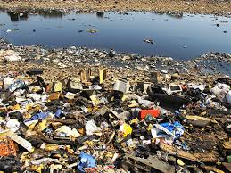
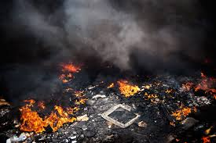
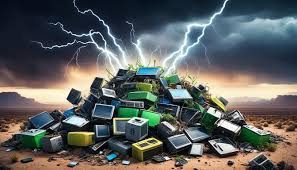

When e-waste is not properly managed, it can have severe consequences for the environment and human health.
*Release of Toxic Substances
Improper disposal methods, such as open burning or dumping in landfills, can release toxic substances like lead, mercury, and cadmium into the air, soil, and water. These pollutants can accumulate in the food chain, posing risks to wildlife and human communities.
*Soil and Water Contamination
E-waste containing hazardous materials can leach into the soil and groundwater, contaminating sources of drinking water and agricultural lands, leading to potential health issues for humans and wildlife.E-waste contains hazardous heavy metals like mercury, lead, and arsenic. When improperly disposed of in soil, these toxic substances contaminate and degrade the land, negatively impacting plant growth, reducing agricultural productivity, and polluting the food supply.
Toxic elements in e-waste leach into water sources, contaminating rivers, lakes, and groundwater. This pollution harms aquatic ecosystems and poses severe health risks to humans who use the polluted water for drinking, cooking, and other daily needs.

*Air Pollution
The burning of e-waste releases harmful gases and particulate matter into the air, contributing to air pollution and respiratory problems for nearby communities.Improper disposal and recycling of e-waste release harmful gases and particulate matter into the air, increasing pollution levels. Inhaling these pollutants can lead to respiratory illnesses, lung damage, and other health complications for both humans and animals.

*Adverse Health Effects
Direct exposure to toxic substances in e-waste can cause serious health problems, including cancer, neurological disorders, hormonal imbalances, reproductive issues, and skin diseases. Workers in the informal recycling sector are particularly vulnerable to these risks.
*Impact on Climate and Long-Term Environmental Damage
E-waste contributes to environmental degradation by emitting greenhouse gases and harmful substances that deplete the ozone layer. This accelerates climate change, disrupting ecosystems and weather patterns globally. E-waste components such as plastics and circuit boards take decades or even centuries to decompose, leaving long-lasting environmental scars. These materials release toxins slowly over time, prolonging their harmful effects.

*Threat to Wildlife
Improper e-waste disposal disrupts natural habitats, contaminating the ecosystems where wildlife thrives. Animals exposed to polluted soil, water, or air suffer health problems and population decline.
*In addition to it, It also cause economic loss.Improper recycling and disposal of e-waste result in the loss of valuable materials like gold, silver, and copper, which could otherwise be recovered and reused. This represents a missed economic opportunity for sustainable resource management.